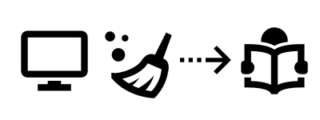
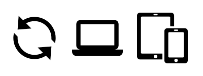

Save webpages, cleaned for better experience
Organise content: tags, favorite, filters, …

Access content from everywhere with mobile apps
wallabag is open-source, and you can install it yourself
Compatibility : import from your bookmarks or any other service
A cartoon is available to understand what wallabag is.
Detailed features
| wallabag is free and open source. Forever. |
| No time to read? Save a link in your wallabag to read it later |
| Read the saved articles in a comfortable view: the content, only the content. Get rid of the ads and menus. |
| Save all the content: text and pictures |
| You can easily migrate from other proprietary services : welcome to you, Pocket / Readability or Instapaper users! Also, you can import your browser bookmarks. |
| You like an article? There's many ways to share it, featuring email, twitter or shaarli |
| Because we are increasingly mobile, the wallabag interface fits all your devices |
| Saving a link is so easy because we provide you with many tools: extensions for Chrome and Firefox, iOS, Android, Firefox OS and Windows Phone application, a bookmarklet, a simple field in your config webpage |
| RSS feeds allow you to read your saved links in your RSS aggregator |
| You have an e-reader? wallabag can export all kind of entries to ePub, Mobi & PDF formats. |
| You can set as many tags you like to your entries |
| It is possible to search through title and content of articles |
| wallabag is multilingual: french, english, spanish, german, italian, russian, persian, czech, polish, ukrainian and slovenian |
| Keyboard shortcuts ! Lots of them ! |
| You’re not the only one at home to use wallabag? that’s fine, wallabag is multi-user |
| Prefer a dark template? Perfect, many templates are available in the configuration screen |
| Many storage systems allowed: sqlite, mysql and postgresql |
| Scroll position is saved: when you return to an article, you come back where you were. So convenient! |
| You can flattr flattrable articles directly from your wallabag |
| You want to retrieve your wallabag data? Hey, remember, wallabag is open source, you can export it |
Screenshots


Pictures (except wallabag screenshots) used in this page come from icons8.com.